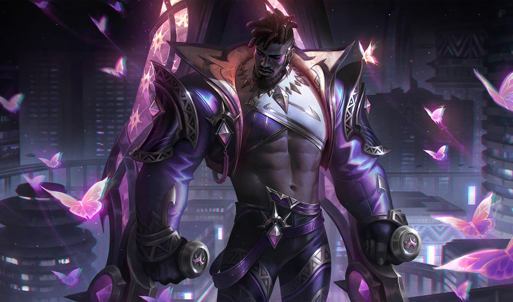
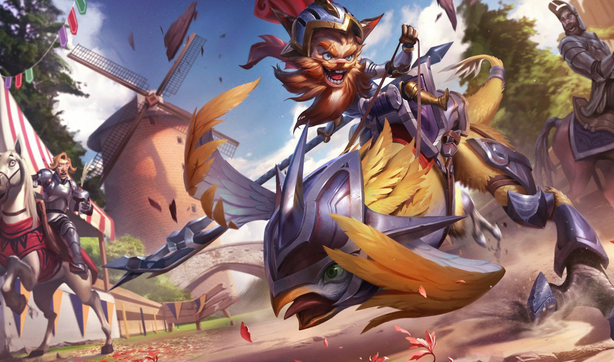
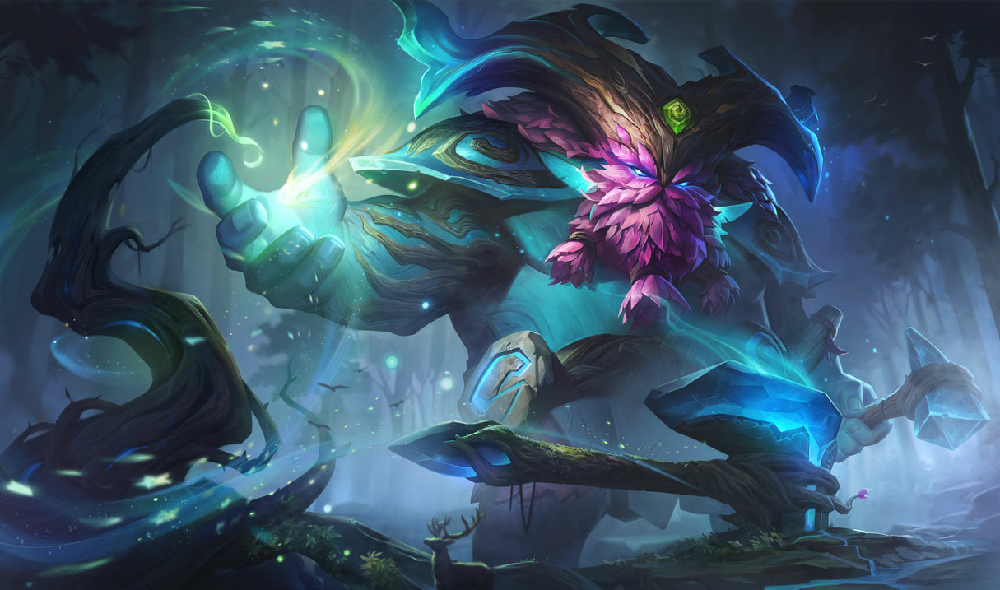

La línea de arriba del mapa destaca por ser la más larga de la Grieta del Invocador. Esto significa que el jugador que tenga el papel de ‘toplaner’ (lo normal es que haya un solo campeón) tendrá que tener especial cuidado con su posición si no quiere que le maten. Más adelante explicaremos los consejos básicos que deberíais seguir para jugar en esta línea.

K'Sante, un guerrero desafiante y valiente, lucha contra gigantescas bestias y despiadados Ascendidos para proteger su hogar, Nazumah, un codiciado oasis ubicado entre las dunas shurimanas. Tras cortar lazos con su pareja, K'Sante se percata de que, para convertirse en un guerrero digno de liderar su ciudad, debe calmar su tesón y apaciguar su egoísta búsqueda del éxito. Solo entonces podrá evitar ser presa de su propio orgullo y encontrar la sabiduría que necesita para derrotar a los viles monstruos que amenazan a su pueblo.

Kled es un guerrero yordle tan intrépido como malhumorado y es la encarnación de la furiosa bravuconería noxiana. Los soldados del imperio lo adoran, sus oficiales desconfían de él y la clase noble lo detesta. Muchos afirman que ha luchado en todas y cada una de las campañas de guerra noxianas, que ha ''adquirido'' todos los títulos militares habidos y por haber, y que nunca se echa para atrás. Aunque la veracidad de estos rumores sea cuestionable, una parte de la leyenda es innegable: cuando Kled se lanza a la batalla a lomos de Skaarl, su no muy fiable corcel, protege todo lo que es suyo... y reclama todo lo que puede.

Ornn es el espíritu de Freljord de la forja y la artesanía. Trabaja en la soledad de una enorme forja esculpida en las cavernas de lava bajo el volcán de Dulcehogar. En ella modela objetos de calidad sin igual y depura menas en burbujeantes calderos de roca fundida. Cuando otras deidades (sobre todo Volibear) merodean por la tierra y se entrometen en asuntos de mortales, Ornn se ofrece para poner a estos seres impetuosos en su sitio, ya sea con su fiel martillo o con la furia de las mismísimas montañas.